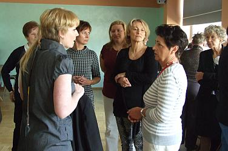
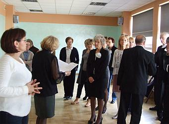

A tymczasem w Cameracie...
.
2013-10-27
Pogoda cudna! Ciepło i słonecznie.Wieliczanie wsiadają pierwsi, po drodze zabieramy „Kraków” i już komplet.
Jak widać uśmiechnięty (popatrzcie ... nie boją się konkursu !!!)

Panie

Przed konkursem jest to możliwe :(
Teraz chwila skupienia i przebieramy się.
 
Już wszyscy w strojach „Camerackich” są w sali koncertowej. Tutaj wysłuchamy innych chórów i sami zaśpiewamy.


© Stowarzyszenie Muzyczne Chór Camerata Wieliczka
Projekt i wykonanie:  Prowadzenie strony: Małgorzata Wysocka-Cebula
Prowadzenie strony: Małgorzata Wysocka-Cebula